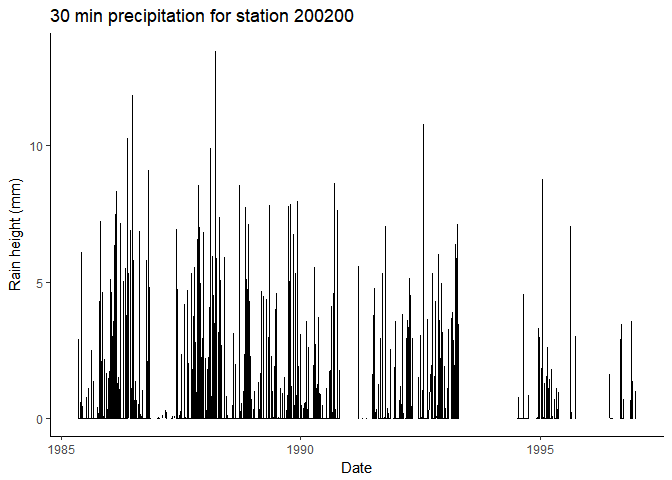

hydroscoper is an R interface to the Greek National Data Bank for Hydrological and Meteorological Information, Hydroscope. Hydroscope is the result of long-standing efforts by numerous Greek scientists in collaboration with various companies and associations. It was implemented in three phases, funded by the Ministry of Development, the Ministry of Environment and Energy and the European Union.
Hydroscope, provides several national data sources from various organisations via a web interface. Each participating organisation keeps its data on its own server using the Enhydris database system for the storage and management of hydrological and meteorological data. These organisations are:
- Ministry of Environment and Energy.
- Ministry of Rural Development and Food.
- National Meteorological Service.
- National Observatory of Athens.
- Greek Prefectures.
- Public Power Corporation.
The data are structured as tables and space separated text files, but are in Greek, thus limiting their usefulness.
hydroscoper covers Hydroscope’s data sources using the Enhydris API and provides functions to:
- Transform the available tables and data sets into tidy data frames.
- Transliterate the Greek Unicode names to Latin.
- Translate various Greek terms to English.
Data sources
- Ministry of Environment and Energy, National Observatory of Athens and Greek Prefectures, http://kyy.hydroscope.gr/
- Ministry of Rural Development and Food, http://ypaat.hydroscope.gr
- National Meteorological Service, http://emy.hydroscope.gr
- Greek Public Power Corporation, http://deh.hydroscope.gr
Note that only the two Ministries allow to download time series values freely.
Installation
Install the stable release from CRAN with:
You can install the development version from GitHub with:
Using hydroscoper
The functions that are provided by hydroscoper are:
-
get_stations, get_timeseries, get_instruments, get_water_basins, get_water_divisions, get_political_divisions, get_variables, get_units_of_measurement, get_time_steps, get_owners, get_instruments_type, get_station_type, get_databasefamily functions, to retrieve a data frame with Hydroscope’s data for a given data source. -
get_data, to retrieve a tidy data frame with values of a time series -
get_coords, to convert Hydroscope’s points raw format to a tidy data frame -
hydro_translateto translate various terms and names from Greek to English
The data sets that are provided by hydroscoper are:
-
stationsa tidy data frame with stations’ data from all Hydroscope’s data sources -
timeseriesa tidy data frame with time series’ data from all Hydroscope’s sources sources.
Example
This is a basic example which shows you how to get the stations’ and timeseries data from the Hydroscope’s Ministry of Environment and Energy database, http://kyy.hydroscope.gr/.
We will use the the package’s data stations and timeseries, to reduce the time needed with data munging. We can subset the station’s data for the kyy subdomain with:
library(hydroscoper)
library(tibble)
kyy_stations <- subset(stations, subdomain == "kyy")
as_tibble(kyy_stations)
#> # A tibble: 425 x 9
#> station_id name water_ba~ water_~ owner long~ lati~ alti~ subd~
#> * <int> <chr> <chr> <chr> <chr> <dbl> <dbl> <dbl> <chr>
#> 1 501032 AG. BASIL~ "KOURTAL~ GR13 min_ag~ NA NA NA kyy
#> 2 200246 GEPH. KOK~ "ALPHEIO~ GR01 min_en~ 22.0 37.5 318 kyy
#> 3 200237 TROPAIA "ALPHEIO~ GR01 min_en~ 22.0 37.7 728 kyy
#> 4 200231 BYTINA "ALPHEIO~ GR01 min_en~ 22.2 37.7 1011 kyy
#> 5 200200 LYKOURIA "ALPHEIO~ GR01 min_en~ 22.2 37.9 758 kyy
#> 6 200236 MEGALOPOLE "ALPHEIO~ GR01 min_en~ 22.1 37.4 429 kyy
#> 7 200244 ODOG. AG.~ "REMA CH~ GR01 min_en~ 21.8 37.0 182 kyy
#> 8 200204 TRIPOTAMA "ALPHEIO~ GR01 min_en~ 21.9 37.9 570 kyy
#> 9 200198 KASTELLIO "ALPHEIO~ GR01 min_en~ 22.0 37.9 792 kyy
#> 10 200239 PERDIKONE~ "ALPHEIO~ GR01 min_en~ 22.0 37.7 837 kyy
#> # ... with 415 more rowsTo get the time series’ data for the station 200200 (http://kyy.hydroscope.gr/stations/d/200200/) we can use:
station_ts <- subset(timeseries, station_id == 200200)
as_tibble(station_ts)
#> # A tibble: 4 x 8
#> timeser_id station_id variable timestep units start~ end_d~ subd~
#> * <int> <int> <chr> <chr> <chr> <chr> <chr> <chr>
#> 1 761 200200 wind_direc <NA> ° 1948-~ 1997-~ kyy
#> 2 56 200200 precipitation 30_minutes mm 1985-~ 1997-~ kyy
#> 3 760 200200 snow daily mm 1948-~ 1997-~ kyy
#> 4 759 200200 precipitation daily mm 1953-~ 2011-~ kyyYou can get the station’s time series 56 (http://kyy.hydroscope.gr/timeseries/d/56/):
ts_raw <- get_data(subdomain = "kyy",time_id = 56)
ts_raw
#> # A tibble: 147,519 x 3
#> Date Value Comment
#> <dttm> <dbl> <chr>
#> 1 1985-05-06 08:00:00 0 1
#> 2 1985-05-06 08:30:00 0 1
#> 3 1985-05-06 09:00:00 0 1
#> 4 1985-05-06 09:30:00 0 1
#> 5 1985-05-06 10:00:00 0 1
#> 6 1985-05-06 10:30:00 0 1
#> 7 1985-05-06 11:00:00 0 1
#> 8 1985-05-06 11:30:00 0 1
#> 9 1985-05-06 12:00:00 0 1
#> 10 1985-05-06 12:30:00 0 1
#> # ... with 147,509 more rowsLet’s create a plot:
library(ggplot2)
ggplot(data = ts_raw, aes(x = Date, y = Value))+
geom_line()+
labs(title="Daily rainfall for station 200200",
x="Date", y = "Rain (mm)")+
theme_classic()
Meta
- Please report any issues or bugs.
- Licence:
- All code is licenced MIT.
- All data are from the public data sources in http://www.hydroscope.gr/.
-
To cite
hydroscoper, please use:Konstantinos Vantas (2017). hydroscoper: Interface to Hydroscope. R package version 0.1.0. https://github.com/kvantas/hydroscoperA BibTeX entry for LaTeX users is
@Manual{, title = {hydroscoper: Interface to Hydroscope}, author = {Konstantinos Vantas}, year = {2017}, note = {R package version 0.1.0}, url = {https://github.com/kvantas/hydroscoper}, } Please note that this project is released with a Contributor Code of Conduct. By participating in this project you agree to abide by its terms.